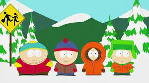

Stan is portrayed as the everyman of the group,[10] described in official media as an "average, American 4th grader."[11] Kyle is Jewish, and his portrayal as one of the few such people in South Park is often dealt with satirically.[10] Stan is modeled after Parker, while Kyle is modeled after Stone. They are best friends, and their friendship, symbolically intended to reflect Parker and Stone's friendship,[12] is a common topic throughout the series. Cartman (as he is commonly referred to) is amoral and increasingly psychopathic, and is commonly portrayed as an antagonist. His staunch antisemitism has resulted in a progressive rivalry with Kyle.[10][13] Kenny, who comes from a poor family, tightly wears his parka hood to the point where it obscures most of his face and muffles his speech. During the first five seasons, Kenny died in almost every episode before reappearing in the next with no definite explanation. He was killed off in the fifth season episode "Kenny Dies", being reintroduced in the sixth season finale. Since then, Kenny is depicted as dying sporadically. During the first 58 episodes, the children were in the third grade. During the fourth season, they entered the fourth grade, where they have remained ever since.[14][15]